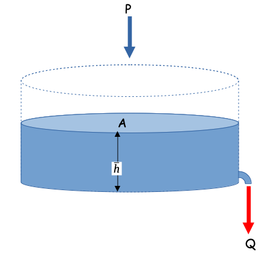

12.2 Linear Reservoir Model¶
Conceptually the linear reservoir model employs the water budget for a watershed, and that discharge from the watershed is proportional to the current accumulated storage.
Starting with something like the sketch below.

One relates the discharge formula and the storage formula. The discharge formula, is where the “linear” part arises (linear in accumulated watershed depth) the constant \(\frac{1}{\alpha}\) is just some property of the watershed; \(\alpha\) is non zero.
And the storage formula is
with a substitution
Storage itself is simply the product of the accumulated watershed depth and area
Another substitution
Now we can factor out the obvious constants to obtain
Seperate, integrate, and simplify; we assume that \(P\) is some constant (otherwise the analysis is a bit more complex)
Now naturally we dont know \(\alpha\) for a watershed, hence the need for data analysis. Suppose for the sake of demonstration it is 1.0, we can simulate the anticipated discharge for a watershed (in the absence of losses)
# structural simulation need units for practical applications
import math
alpha = 1.0 #watershed discharge conversion constant
area = 10.0 #some area
pee = 1.0 #constant rain
qzero = 0 #zero initial discharge
hzero = 0 #zero initial storage
howmany = 1000
qnow = [0 for i in range(howmany)]
pnow = [0 for i in range(howmany)]
dsnow = [0 for i in range(howmany)]
time = [0 for i in range(howmany)]
deltat = 0.01 # time step value
dsnow[0]=math.inf # set first condition at infinty
for itime in range(1,howmany):
time[itime] = deltat+time[itime-1]
qnow[itime]=(area*pee*(1.0-math.exp(-time[itime]/alpha)))
pnow[itime]=(area*pee)
average_in=0.5*(pnow[itime]+pnow[itime-1])
average_out=0.5*(qnow[itime]+qnow[itime-1])
dsnow[itime]=((average_in-average_out))
import matplotlib.pyplot # the python plotting library
myfigure = matplotlib.pyplot.figure(figsize = (10,5)) # generate a object from the figure class, set aspect ratio
# Built the plot
matplotlib.pyplot.plot(time, qnow, color ='red')
matplotlib.pyplot.plot(time, pnow, color ='blue')
matplotlib.pyplot.plot(time, dsnow, color ='green')
matplotlib.pyplot.xlabel("Elapsed Time")
matplotlib.pyplot.ylabel("Runoff or Rainfall in L^3/T")
matplotlib.pyplot.title("Linear Reservoir Runoff Model \n"+"Area ="+str(area)+" alpha ="+str(alpha) )
matplotlib.pyplot.legend(["Discharge","Precipitation","Delta Storage"])
matplotlib.pyplot.show()
A interpretation of this kind of model can serve as an explaination of the NRCS CN method (but in cumulative space)
References¶
Rate-Based Estimation of the Runoff Coefficients for Selected Watersheds in Texas
Kuichling, E. (1889). “The relation between the rainfall and the discharge of sewers in populous areas.” Trans. ASCE, 20(1), 1–56.
Gupta pp. 711-724